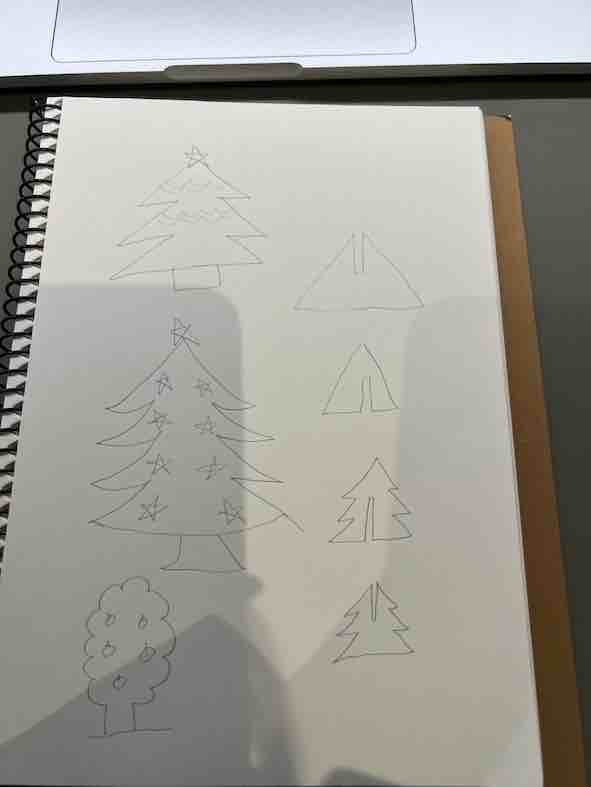
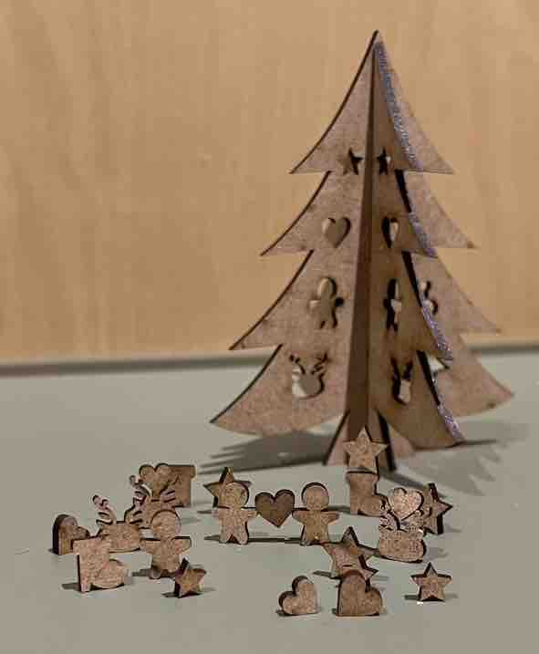
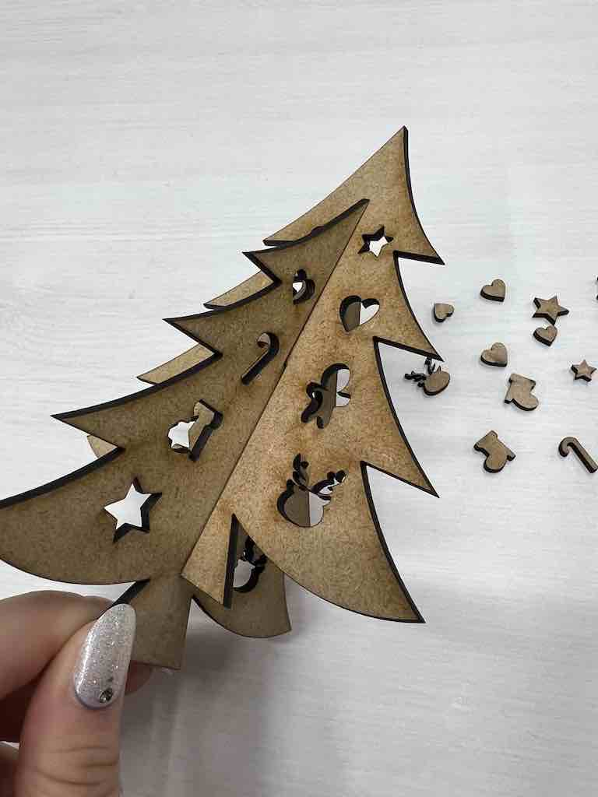

CHRISTMAS!!
スケッチ

作品

設計ファイル
ここをクリック
作品説明
出先などでビビッときた小物を買ってしまう癖があるのですが、それを置くスペースに何か新しい仲間を増やしたいと思ってこれを作りました。
何を作ろうと考えたときに、サンタクロースの置物があるのと、これから待ちに待ったクリスマスシーズンになるのでツリーを作ろうと決めました。
サイズも小物とマッチするように小さめで作りました。
まとめ
fusion360で作成した設計図がなんと消えてしまし、1から作り直しになってしまったけどそれなりにいいものが出来上がったのでよかったです。
失敗しまくったけどその分いろんな操作方法を知ることができました。
↓これは設計のサイズを間違えてしまって下まではまらなかったやつ

saraのXBPのページ